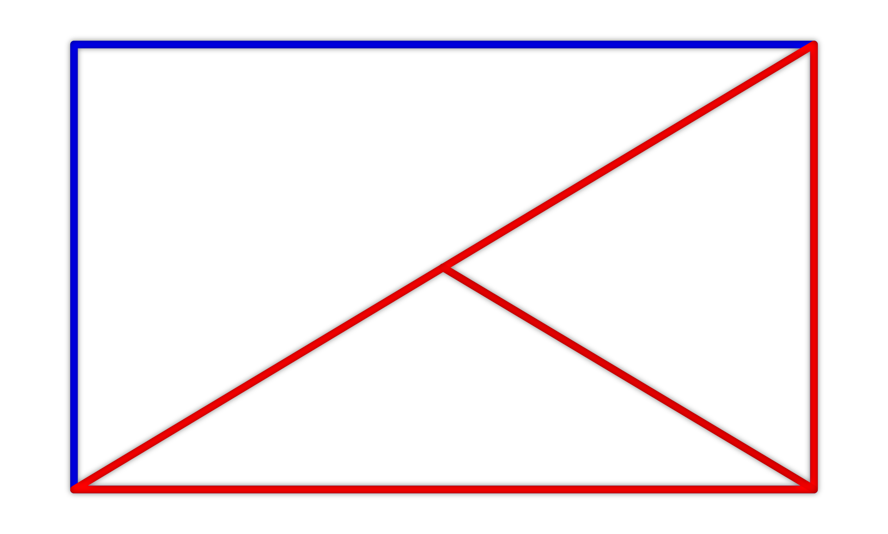

Je dán obdélník s délkami stran 14 cm a 48 cm. Tento obdélník je nejprve rozdělen jednou z jeho úhlopříček a následně je spojen střed této úhlopříčky s vrcholem obdélníku, který na této úhlopříčce neleží. Tímto způsobem vznikly dva rovnoramenné trojúhelníky (na obrázku červenou barvou). Určete o kolik cm² se liší jejich obsahy a o kolik cm se liší jejich obvody.
